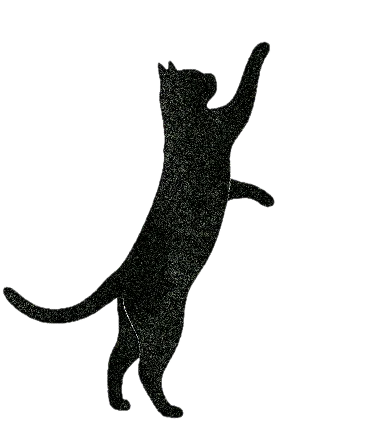

ESPACE LANGUES (CENTRO DE LENGUAS) · UNIVERSITÉ SORBONNE PARIS NORD
IA generativa y cursos en línea del Espace Langues
La langue au Chat
Este sitio presenta nuestras experimentaciones con la IA generativa en los cursos en línea del Espace Langues de la Université Sorbonne Paris Nord, desde el diseño hasta el aprendizaje: lo que hemos probado, los límites que percibimos y las líneas que exploramos.

¿Quiénes somos?
El equipo de e-learning del Espace Langues
Université Sorbonne Paris Nord
- Julie LaporteResponsable de e-learning del Espace Langues, profesora de inglés y diseñadora pedagógica multimedia
- Kenza Belhaj SoullamiProfesora de inglés y diseñadora pedagógica multimedia
- Katie DallingerProfesora de inglés y diseñadora pedagógica multimedia
Las 7 estaciones
En el orden que quieras- Elige una estación
- Descubre nuestras actividades, límites y líneas de trabajo
- Prueba los prompts y supera los retos
- Estación 1
Interacción escrita
Una destreza difícil de practicar en clase y valiosa en los cursos híbridos o 100 % en línea, donde la IAG ofrece un interlocutor siempre disponible.
Entrar en la estación - Estación 2
Expresión oral
Para paliar la inhibición y el escaso tiempo de expresión en clase, el modo de voz de los agentes conversacionales puede ofrecer un espacio de práctica adicional. Cada estudiante puede multiplicar los intentos y apoyarse en el error para progresar, sin la presión inmediata de un intercambio con una persona real.
Entrar en la estación - Estación 3
Expresión escrita
En clase, la retroalimentación sobre lo escrito suele ser diferida, parcial o subjetiva. La IAG transforma esta dinámica al ofrecer una respuesta inmediata, detallada y amable: cada borrador se convierte en una oportunidad para practicar, autoevaluarse y progresar. Además, al comparar su trabajo con las producciones textuales o visuales de la máquina, cada estudiante aprende a analizar, a reaccionar y a perfeccionar su propia producción.
Entrar en la estación - Estación 4
Formar(se) en las herramientas y fomentar el espíritu crítico
Aprender a usar la IA, con criterio.
Entrar en la estación - Estación 5
Iniciación a la investigación… en V.O.
La investigación académica en inglés está a unos pocos prompts de distancia. Lo importante no es producir rápido, sino aprender a cuestionar, verificar y criticar lo que propone la máquina.
Entrar en la estación - Estación 6
Evaluación sumativa
¿Se puede seguir evaluando el trabajo de un o una estudiante? La frontera entre producción auténtica y producción aumentada se ha difuminado. Pero, adaptando nuestros criterios, hemos seguido evaluando al alumnado en cursos asíncronos en línea: en lo escrito, valorando el proceso y el espíritu crítico más que el producto final en sí; en lo oral, apostando por lo personal, lo creativo y lo espontáneo.
Entrar en la estación - Estación 7
Diseño pedagógico
A veces la IAG acelera el trabajo; a veces hace posible lo que antes no lo era; a veces incluso nos hace perder tiempo. En el fondo, no nos permite necesariamente trabajar menos: nos permite ir más lejos en creatividad, multimodalidad y ambición pedagógica.
Entrar en la estación - Todas las estaciones
Catálogo de actividades
Busca una palabra, filtra por estación o por tipo.
Abrir el catálogo Tu recorrido
0 / 7 estaciones visitadas
0 retos superados
Las estaciones visitadas y los retos marcados se guardan solo en este dispositivo.
AI Assessment Scale (AIAS)
Ante el reto de la IA generativa en lenguas, hemos tomado una decisión pedagógica: situar la mayoría de nuestras tareas en el nivel 3 (colaboración focalizada) de la escala AIAS (AI Assessment Scale). ¿El objetivo? Ni padecer la herramienta ni prohibirla, sino aprender a interactuar y cocrear con ella. A través de estas actividades concretas, cada estudiante utiliza la IAG como aliada para la retroalimentación o la creación asistida, al tiempo que desarrolla el sentido crítico indispensable para mantener el control de sus propias producciones.
La AIAS se diseñó inicialmente para la evaluación, pero sus autores precisan que sus niveles describen tipos de tareas y que también puede estructurar actividades de aprendizaje (Roe et al., 2025 (se abre en una pestaña nueva)). Así es como la usamos: el nivel que figura en una actividad indica el espacio que la consigna deja a la IAG. No es ni una nota ni una jerarquía: ningún nivel vale más que otro. Las actividades en las que el alumnado no utiliza la IAG, como las de la estación Diseño pedagógico, donde es el profesorado quien la usa, no llevan etiqueta.
The AI Assessment Scale (AIAS) v2.1
| Level | Description |
|---|---|
| AIAS 1NO AI (padlock) | This task is completed in a controlled environment designed to exclude AI. Knowledge, understanding, and skills are demonstrated and assessed independently. |
| AIAS 2AI PLANNING | This task focuses on planning activities such as topic exploration, outlining, and initial research. AI may be used to support this process, and the quality of planning and idea development is assessed whether or not AI was used. |
| AIAS 3AI COLLABORATION | AI may be used to help complete this task, including idea generation, drafting, feedback, and refinement. It is designed so that AI alone will not reach the required standard. Assessment covers both the work itself and how AI outputs are evaluated, modified, and integrated. |
| AIAS 4FULL AI | There is an expectation of AI involvement in this task. The goal cannot be reached by AI or by a person working alone in the time available. Assessment focuses on the critical thinking and subject knowledge shown in directing AI. |
| AIAS 5AI EXPLORATION | This task is designed for creative AI use to solve problems, generate novel insights, or develop innovative solutions in the discipline. Approaches may be co-designed by students and instructors. |
 (CC BY-NC-SA 4.0, se abre en una pestaña nueva)AI Assessment Scale (AIAS) v2.1 © 2026 Learning Innovation Practice Ltd. Based on the original AIAS by Perkins, Furze, Roe & MacVaugh. aiassessmentscale.com (se abre en una pestaña nueva)
(CC BY-NC-SA 4.0, se abre en una pestaña nueva)AI Assessment Scale (AIAS) v2.1 © 2026 Learning Innovation Practice Ltd. Based on the original AIAS by Perkins, Furze, Roe & MacVaugh. aiassessmentscale.com (se abre en una pestaña nueva)
La AIAS adaptada para los cursos de e-learning del Espace Langues
| Nivel | Papel de la IAG | Usos |
|---|---|---|
| AIAS 1Sin IAG | La IAG no se utiliza para realizar la tarea.Fuera de una prueba vigilada, el nivel 1 es una consigna de trabajo, no una garantía: solo la vigilancia lo asegura. Por eso la versión 2.1 de la AIAS marca este nivel con un candado: es el único nivel «seguro». | Primer borrador de expresión escrita sin IAG ni traductor automático; primer borrador oral grabado sin IAG; primera búsqueda bibliográfica sin IAG; creación de la propia producción tras el análisis crítico de la producción de la IAG; prueba oral controlada en síncrono y presencial; actividad de comprensión o de producción con tiempo limitado. |
| AIAS 2IAG para planificar y explorar | La IAG interviene antes de la realización, para buscar ideas, organizar, hacer surgir vías de trabajo o preparar un procedimiento. La realización principal sigue siendo independiente. | Lluvia de ideas para una presentación; exploración de una problemática; resumen de un artículo antes de decidir si leerlo; preparación de un guion, de un proyecto o de un vídeo oral personal. |
| AIAS 3Colaboración focalizada ★ El nivel de la mayoría de nuestras tareas | La IAG interviene en etapas concretas: retroalimentación, corrección, comparación, simulación, generación parcial o creación asistida. El o la estudiante debe analizar y modificar los resultados. | Retroalimentación sobre una producción; comparación entre el propio texto y el de la IAG; corrección opcional; descripción de una imagen mediante prompting; elaboración de un CV; simulación de entrevista o de debate; juego de rol oral con IAG por voz; conversación en inglés para definir una pregunta de investigación; comparación de la propia búsqueda bibliográfica con la de una herramienta de IAG; traducción de un abstract y de sus palabras clave y, después, corrección de la traducción; análisis crítico de un folleto producido por la IAG. |
| AIAS 4IAG en toda la tarea | La IAG puede intervenir en casi todas las etapas y el o la estudiante la dirige como a un asistente: diseño, redacción, revisión, maquetación, producción multimodal. Lo que cuenta es su mirada crítica sobre el resultado. | Resúmenes de un artículo en tres registros, comparados; evaluación de un artículo por la IAG en el papel de revisora por pares; paráfrasis de varias herramientas, comparadas; análisis de un gráfico; texto humorístico generado con un prompt preciso y después criticado; generación de un abstract a partir de un artículo; diseño de una presentación de diapositivas; preparación completa de una exposición oral con guion generado por la IAG y teleprompter autorizado. |
| AIAS 5Exploración creativa de la IAG | La IAG se convierte en objeto de experimentación: estudiantes y docentes exploran una nueva forma de aprendizaje o de producción. | Diseño de una actividad inédita. |
 (CC BY-NC-SA 4.0, se abre en una pestaña nueva)Adaptado de la AIAS v2.1 (© 2026 Learning Innovation Practice Ltd) por el equipo de e-learning del Espace Langues, CC BY-NC-SA 4.0.
(CC BY-NC-SA 4.0, se abre en una pestaña nueva)Adaptado de la AIAS v2.1 (© 2026 Learning Innovation Practice Ltd) por el equipo de e-learning del Espace Langues, CC BY-NC-SA 4.0.
Nuestro otro marco de referencia
Los 6 niveles del MCER
El Marco Común Europeo de Referencia para las Lenguas (MCER) fue publicado por el Consejo de Europa en 2001 y sirve de referencia común para describir lo que una persona sabe hacer en una lengua. Distingue seis niveles, agrupados de dos en dos: A1 y A2 para el usuario básico, B1 y B2 para el usuario independiente, C1 y C2 para el usuario competente. Nuestros cursos, nuestras actividades y las certificaciones que prepara nuestro alumnado, como el DELF o el CLES (certificación universitaria francesa en lenguas), se basan en estos niveles.
Usuario básico
- A1AccesoBreakthrough
- A2PlataformaWaystage
Usuario independiente
- B1UmbralThreshold
- B2AvanzadoVantage
Usuario competente
- C1Dominio operativo eficazEffective Operational Proficiency
- C2MaestríaMastery
Fuente: Consejo de Europa. (2002). Marco común europeo de referencia para las lenguas: aprendizaje, enseñanza, evaluación. Ministerio de Educación, Cultura y Deporte / Instituto Cervantes / Anaya. https://cvc.cervantes.es/ensenanza/biblioteca_ele/marco/cvc_mer.pdf (se abre en una pestaña nueva)